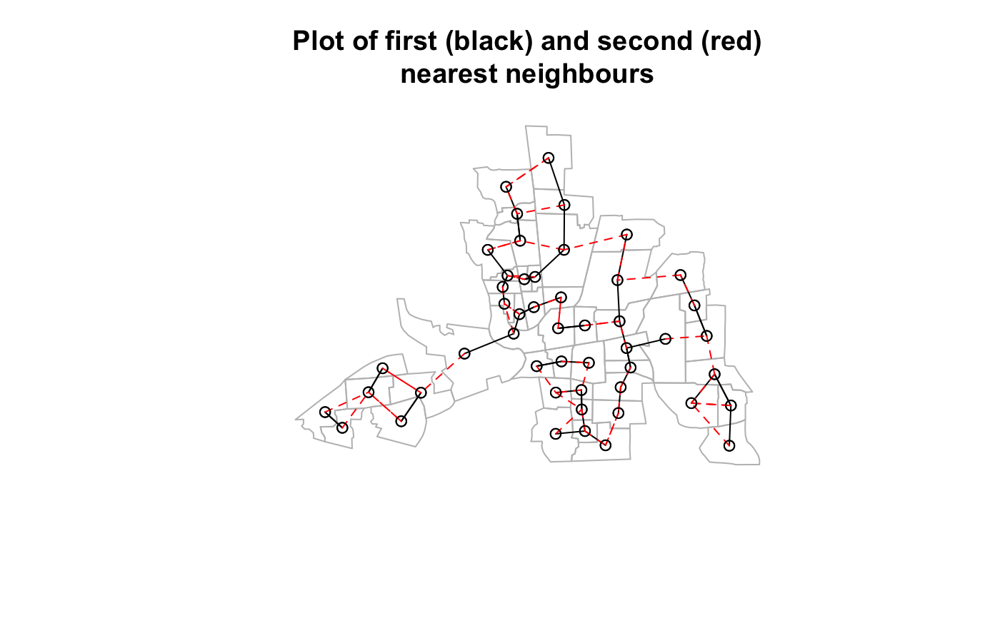

Differences between neighbours lists
diffnb.RdThe function finds differences between lists of neighbours, returning a nb neighbour list of those found
diffnb(x, y, verbose=NULL)
Arguments
| x | an object of class |
|---|---|
| y | an object of class |
| verbose | default NULL, use global option value; report regions ids taken from object attribute "region.id" with differences |
Value
A neighbours list with class nb
Examples
if (require(rgdal, quietly=TRUE)) { example(columbus, package="spData") coords <- coordinates(columbus) rn <- sapply(slot(columbus, "polygons"), function(x) slot(x, "ID")) knn1 <- knearneigh(coords, 1) knn2 <- knearneigh(coords, 2) nb1 <- knn2nb(knn1, row.names=rn) nb2 <- knn2nb(knn2, row.names=rn) diffs <- diffnb(nb2, nb1) plot(columbus, border="grey") plot(nb1, coords, add=TRUE) plot(diffs, coords, add=TRUE, col="red", lty=2) title(main="Plot of first (black) and second (red)\nnearest neighbours") }#> #> colmbs> if (requireNamespace("rgdal", quietly = TRUE)) { #> colmbs+ library(rgdal) #> colmbs+ columbus <- readOGR(system.file("shapes/columbus.shp", package="spData")[1]) #> colmbs+ plot(columbus) #> colmbs+ } #> OGR data source with driver: ESRI Shapefile #> Source: "/Library/Frameworks/R.framework/Versions/3.4/Resources/library/spData/shapes/columbus.shp", layer: "columbus" #> with 49 features #> It has 20 fields #> Integer64 fields read as strings: COLUMBUS_ COLUMBUS_I POLYID#> #> colmbs> if (requireNamespace("spdep", quietly = TRUE)) { #> colmbs+ library(spdep) #> colmbs+ col.gal.nb <- read.gal(system.file("weights/columbus.gal", package="spData")[1]) #> colmbs+ }